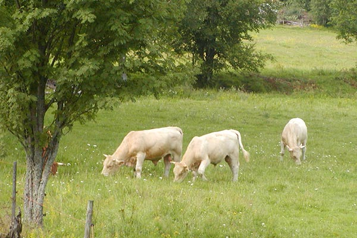

En regel i CSS är att man alltid börjar med att använda sig av en selektor. Selektorn är den som visar vilket element i koden som ska stilsättas. En selektor kan vara id, attribut, class m.m. Under selektorn kommer sedan egenskapen som ska stilsättas, och även hur det ska stilsättas. Det kan handla om tillexempel vilken färg eller form det angivna stycket ska ha.

2. Vad menas med kaskad i CSS?
CSS, som står för cascading style sheet, betyder på svenska stilmall. Cascading på svenska betyder kaskad och kan menas som att någonting ramlar ner från något högre. Det är ungefär så kaskadning i CSS fungerar. Ett stilskapande som bygger på mallen av en trappa i olika nivåer. Där man brukar använda orden förälder och barn i CSS-språket för att förklara tanken bakom att någon kaskadar.